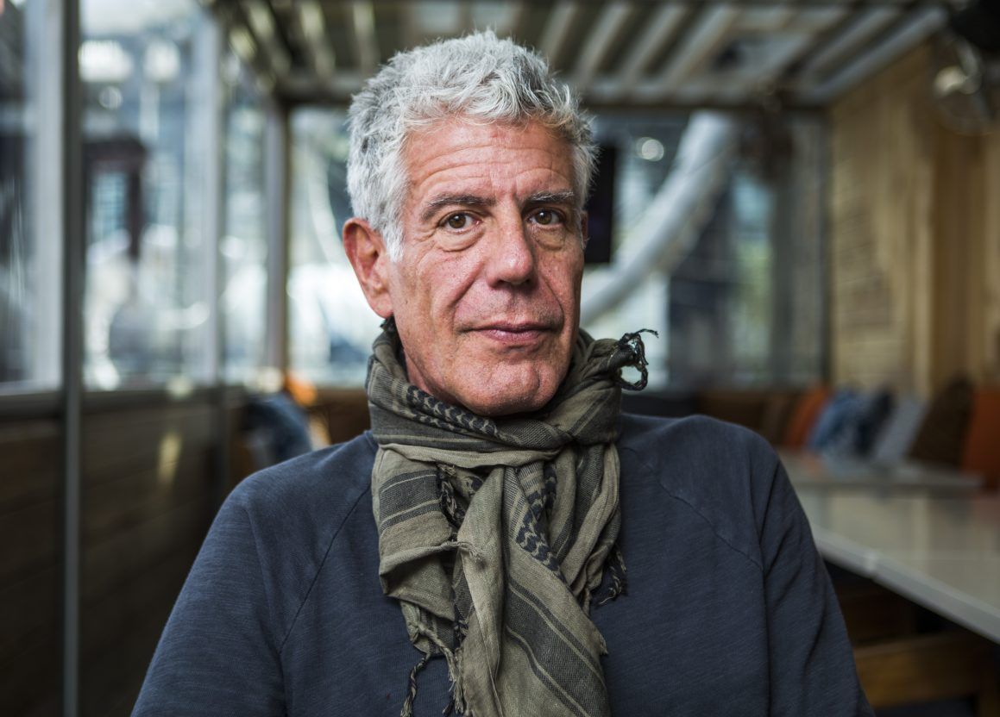

Anthony Bourdain

A photo of Anthony Bourdain sitting in a conference room.
Anthony Michael Bourdain was an American celebrity chef, author, travel documentarian, and television personality who starred in programs focusing on the exploration of international culture, cuisine, and the human condition. He is considered one of the most influential chefs in the world. read more additional information.